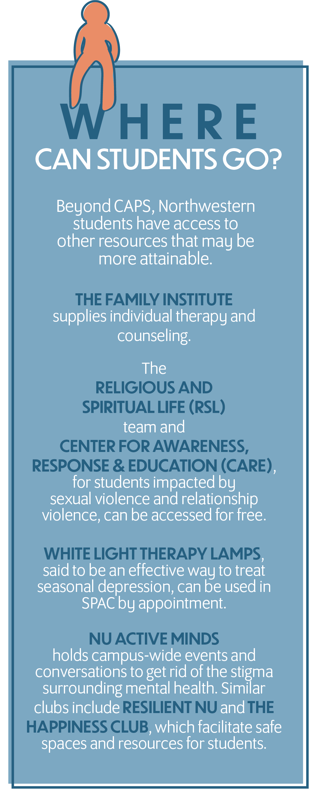

M edill first-year Mia Walvoord tried to stay calm when her
friend texted her about having COVID-19 symptoms the morning after they
ate dinner together. Once her fear that her friend would test positive
was confirmed, Walvoord dropped everything and started packing. Later
that day, she received a phone call from Northwestern University’s COVID
Response Team, informing her that she was contact-traced and needed to
relocate to Quarantine and Isolation Housing (Q/I Housing). While she
had already packed her bags, that didn’t prepare her for the challenges
isolation would bring.
Since the start of the pandemic, many students have faced housing
insecurity and overall anxiety about living situations. When the
University permitted underclassmen to live on campus during Winter
Quarter, they were given a list of rules and regulations including
weekly testing, symptom tracking and socially distancing at least six
feet apart.
According to a study published in September 2020 in the Journal of
Medical Internet Research, the pandemic has negatively impacted college
students. Circumstances brought by lockdown and stay-at-home orders have
highlighted the necessity of acknowledging and intervening in students’
mental health. In the study, 71% of students had increased stress and
anxiety due to COVID-19. While multiple issues contributed to this
increase, 89% of the students reported that it was due to difficulty
concentrating, and 82% of students reported the increased stress came
from greater concerns about academic performance.
In a normal year, students worry about arriving to their 9 a.m. class on
time and fitting a workout class in their schedule. Now, they must
contend with COVID-19 restrictions, isolation and the risk of
contracting the virus. While the University has provided students with
mental health and wellness resources, students are forced to adapt to an
isolating college experience they couldn’t have predicted or prepared
for.
Not the Dorms We Remember
Northwestern requires those who test positive with COVID-19 or were
in contact with someone who tested positive to relocate to designated
quarantine and isolation dorms until their symptoms subside. Students
are usually allowed back to their regular residences after 10 to 14
days.
Walvoord herself did not have COVID-19, but because she was in
contact with someone who tested positive, she was required to move
into Foster-Walker (Plex) on Feb. 16. When she received the initial
phone call from her case manager about the move, Walvoord thought she
was ready to handle whatever information came her way. But Walvoord
wasn’t prepared for the amount of information she would have to
take in.
“They gave us all these dates and kind of shouted them out at
us, like this is when you would get out if you test negative, this is
when you would get out if you test positive. It was just a lot of
information to take in the span of 10 minutes,” Walvoord
says.
Walvoord says that communication with the University throughout her
time in isolation could have been better. During her daily wellness
calls, Walvoord felt the information given to her did not do much to
help. Sometimes, she and her friends would have multiple people
calling and providing different information.
“A lot of the time my questions were met with, ‘I
can’t answer that for you, you have to wait for this person to
call you because that’s a different department’ ... It
causes a lot of extra stress to not have information,” Walvoord
says. “We didn’t know who to trust or who to follow, and
we just wanted to be respectful of University guidelines and not make
a mistake that could harm us or anybody.”
Students are also told bedsheets are optional but are only given one
non-fitted sheet — which barely covers the bed — to tuck
under the mattress. Walvoord remembers feeling grateful for bringing
her own sheets and being spared the inconvenience of using the
University-provided ones. During her stay, the University offered a
flyer with resources for students, such as work-out equipment,
coloring books and numbers for services, like the NU Health Service
and Counseling and Psychological Services (CAPS).
CAPS is Northwestern’s primary resource for mental health, and
it is heavily advertised to students upon arrival to campus. CAPS
offers students short-term individual therapy, where they provide
further resources like group therapy. Students sometimes have to wait
weeks at a time to find an available phone slot, while other times,
there is no availability at all.
Even during an ordinary year, a student’s mental health
circumstances have to ‘pass’ the phone consultation
— although the criteria CAPS has determined is unclear —
to receive further counseling. The exception to this is if an
individual needs to schedule a crisis appointment within 24 to 48
hours. The CAPS website currently provides resources that link to PDFs
or websites for pandemic-related stressors like remote learning,
maintaining connections, abusive households and more.
While the University offers services to make quarantining more
bearable, students continue to attempt to find their own forms of home
in isolation. Weinberg third-year Tamara Raad found solace in her
friends and family.
When Raad sat down to eat with her suitemates, she wasn’t at
her usual dining hall. Instead, she was alone in her Plex isolation
dorm with Zoom pulled up on her computer, a single, dry chicken breast
in front of her, and her three suitemates — also in quarantine
— on her screen.
Raad was asymptomatic when she was tested for COVID-19. When her
results came back positive Jan. 15, Raad shared the news with her
suitemates in 560 Lincoln St. — who would later have to transfer
to quarantine housing due to their exposure to Raad — before
calling the after-hours nurse at NU Health Service around midnight to
tell her about her results. Raad was told she couldn’t be moved
to Plex until the next morning and didn’t receive a call from
her assigned case manager until she’d already moved into Q/I
Housing.
Three days after she tested positive, Raad’s symptoms worsened.
Instead of restful nights, Raad’s sleep was interrupted by chest
pains and coughing. Concerns about virus-related complications arose,
and Raad was taken to the ER for scans and blood tests. The tests
returned normal, taking a weight off of Raad’s shoulders, but
when she returned to Plex, the halls felt as empty as when she
left.
“I think, at some point, I was the only one on the floor that I
was in,” Raad says. “So there was absolutely no
socializing.”
The University provided daily check-ins over the phone, asking about
Raad’s symptoms or if she needed further support from CAPS. Raad
was also able to put in requests for additional snacks, groceries or
medicine to be delivered to her by the University, as students
aren’t allowed to have things delivered by others.
Raad made a point to not have any expectations when she relocated to
Plex. Aware that it was not the nicest dorm and her situation was far
from ideal, she was determined to take the experience one step at a
time and not be disappointed with the outcome.
“I did not think it would be possible that I would get COVID,
so I didn’t even bother to think about what it would be like to
be in isolation housing,” Raad says.
Raad wanted to think of her quarantine as a time to focus on school
and be productive. Being in isolation meant less options for
distractions and more opportunity to be efficient. Even after getting
extensions for one assignment, she found herself feeling unmotivated
and uninspired in the small, exposed-brick dorm room.
“I had several deadlines, and I just could not get myself to
study,” Raad says. “Even on days where I wasn’t
feeling too sick, physically, I just could not get anything
done.”
COVID-19 Off-Campus
Living off-campus is often considered an exciting part of college.
With fewer rules, no RAs and much more freedom, students tend to look
forward to moving past Northwestern’s two-year on-campus
residency requirement. But with COVID-19 still weighing heavily on
students, living off-campus presents its own challenges, especially
when one roommate contracts the virus. Some students sharing
off-campus housing have created rules and restricted social
interactions to lessen the chance of contracting COVID-19.
Communication third-year Shelby Schultz contracted COVID-19 in early
November while living off-campus with three other roommates. Her
roommates didn’t get the virus, and Schultz had to isolate in
her bedroom for the required 10- day quarantine period. After
receiving her positive test results but no phone calls from the
University, Schultz took it upon herself to inform those around her
and the University. While she waited to see if her symptoms worsened,
she still attended her online classes and was granted extensions from
professors.
With COVID-19 forcing students to adapt to unimaginable and
unprecedented circumstances, pressures to excel and stay safe have
elevated.
“I wish I had, at the time, just focused on getting better, not
trying to do school,” Schultz says.
One frustrating aspect of having COVID-19 was hearing how
insensitively professors would discuss the topic, according to
Schultz. While speaking with one professor who was not aware of
Schultz’s state, the professor discussed the long-term effects
of the virus and how they thought college students were being careless
about COVID-19 rules.
“I felt a little uncomfortable with a teacher talking about
[COVID-19] as if we didn’t care about getting it or realize how
horrible it is to get it,” Schultz says.
A major concern was spreading the virus to her roommates. The
students share a bathroom, and Schultz had to sanitize it after each
use before returning to her bedroom. Her roommates would bring food
and water to her room while she remained inside. While isolating,
Schultz called her parents and talked to her Discord group daily. She
and her roommates even
watched movies on Netflix virtually, so there was still a sense of
community.
“I just learned how to cope with quarantine and make sure I
stayed connected to people and didn’t go crazy,” Schultz
says.
Possibly spreading COVID-19 to roommates has become a pressing
concern for students on- and off-campus. But sometimes, this
isn’t even a worry. Rishi Mahesh, a Communication fourth-year,
recovered from COVID-19 in his Evanston apartment with a friend who
had also already tested positive. Exhausted, achy and feverish, Mahesh
was most anxious about taking his Fall Quarter final exams after
contracting the virus, even though he barely had enough energy to get
out of bed.
Mahesh caught COVID-19 during Thanksgiving break after being invited
to his close friend’s house in Michigan. His two roommates had
already gone home for the holiday, so Mahesh returned to his Evanston
apartment to wait out his symptoms. He says his anxiety worsened his
condition, especially because the only options he was given for finals
were to delay them by a week or receive Incompletes in his classes and
take them the following quarter.
“It sucks that those were the only two options,” Mahesh
says. “It was really demoralizing.”
Mahesh ultimately decided to take his finals the following week but
experienced worsened health due to lack of sleep from stress. Mahesh
was also nervous about quarantining in isolation once he contracted
COVID-19.
“I remember being very anxious about it, like in advance being
like, ‘Oh, my God, what is it gonna be like to be alone?’
I always considered myself someone who would not be okay doing
that,” Mahesh says.
However, once Mahesh was quarantining, he says, he felt
“totally fine” — in fact, he decided to use social
media to take control of the experience. On his Twitter account, which
has 17.6k followers, he answered questions about the virus and
connected with others who had tested positive. Mahesh wanted to use
his platform to counteract the narrative that most young adults
contract the virus through super-spreader events.
Throughout Fall Quarter, Mahesh had been seeing a CAPS provider for
mental health. While he didn’t discuss COVID-19 much with his
provider, he did bring up the additional familial stress he had been
under due to catching the virus. Eventually, Mahesh turned to
friendships for support instead of the University, believing that he
couldn’t rely on the school.
“There’s no love there. In terms of what’s going to
be keeping me through, [it’s] not the school that I go
to,” Mahesh says. “I don’t think that was ever
really a thought in my head. I was like, ‘Alright, you told me I
have COVID, now leave me alone.’”
Too Little, Too Late
In response to the ever-growing stressors students face during the
pandemic, the University has sent emails to the student body with
resources. At the beginning of Winter Quarter, Julie Payne-Kirchmeier,
VP for Student Affairs, sent Northwestern students a “Welcome,
Wildcats!” email with links to University resources for
financial assistance, Northwestern Career Advancement, testing and
COVID-19 safety and more. While it wasn’t specifically related
to mental health, there was a wellness section listing resources, like
CAPS, that are often included in the administration’s emails to
students. Walvoord and her friends were interested in using CAPS
during Winter Quarter, but soon discovered that the CAPS calendar was
completely booked for the foreseeable future. As a result, she
“just kind of gave up on the idea.”
“I understand Northwestern might have limited resources for
people to talk to you, but that’s just not ideal for someone who
is being proactive and looking to get help to be denied that because
of scheduling,” Walvoord says.
Walvoord did not use any mental health resources while she was in
quarantine housing, but she was more than ready to go back to her own
room by the end of her isolation period.
“I was very excited. It replicated that feeling of coming onto
campus the first time,” she says. “Because everything felt
new again, I’ve just gained a new appreciation for being on
campus.”
Still, scheduling with the University continued to be a problem for
Walvoord during her move- out process, which she says was far from
ideal and colored with confusion and stress. Before moving out of
Plex, Walvoord and her friends received calls giving them clearance to
leave at very different times of day. Her ride back to her dorm,
provided by the University, had not been confirmed, and despite
multiple attempts, she was not able to get a moving crate to transport
her items to the downstairs lobby. After calling to inquire about the
crate and waiting for one for close to an hour, Walvoord had to carry
her items by herself.
While Walvoord was “super grateful” to have gotten a ride
back to her dorm at the conclusion of her quarantine, she was still
stressed about her schoolwork and moving back into her room while her
roommate awaited her arrival. When she tried to get into her room, her
Wildcard didn’t work, forcing her to get a temporary keycard.
She later found out that her card had not been cleared until hours
after she left Plex.
“I just felt a little bit forgotten about, at the end of the
day, and that feeling didn’t sit very well with me,”
Walvoord says.

As a student starting college remotely, Walvoord was simply happy to
be on campus, meet new people and feel more connected to the
Northwestern community. She felt grateful for the everyday experiences
of being a student on campus, whether it was picking up food at the
dining hall or walking by the lakefront. After living in the
quarantine dorms and being deprived of these small joys, she sought to
reclaim that gratitude for the sake of her mental health and overall
college experience.
“Starting out school as a freshman in such a crazy year with
COVID, and having so many restrictions and things that you can’t
do, [you’re] able to overcome that just by feeling like,
‘At least I’m here,’” she says